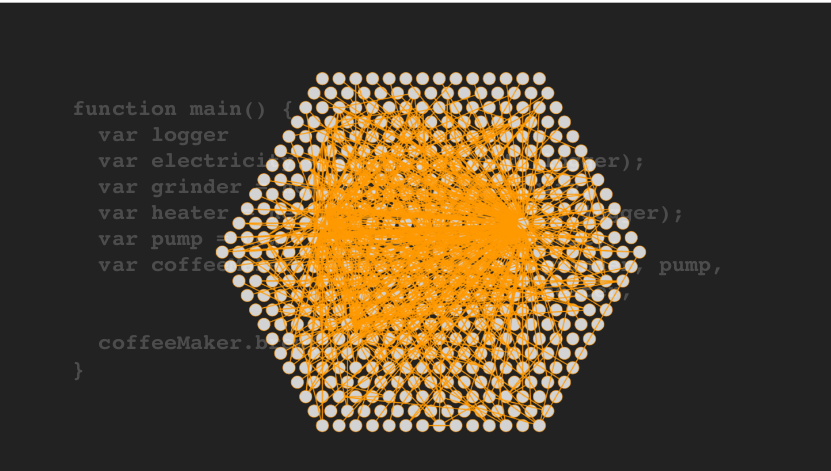
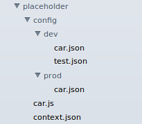

Write simple, maintainable Nodejs
About me
- github: @fantasyni
- yixin, wechat: fantasyni
- core member from pomelo at Netease
- node.js hacker, over 2 years node experience
- not just a code farmer, but a code poet
Category
- Overview
- Framework
- Practice
- Conclusion
Overview -- Node.js development
Node.js is a platform built on Chrome's JavaScript runtime for easily building fast, scalable network applications. Node.js uses an event-driven, non-blocking I/O model that makes it lightweight and efficient, perfect for data-intensive real-time applications that run across distributed devices.
node development is easy
var http = require('http');
http.createServer(function (req, res) {
res.writeHead(200, {'Content-Type': 'text/plain'});
res.end('Hello World\n');
}).listen(1337, '127.0.0.1');
console.log('Server running at http://127.0.0.1:1337/');
Overview -- Node.js development
With npm, a lot of modules and frameworks make node development easier
web framework -- express
var express = require('express');
var app = express();
app.get('/', function(req, res){
res.send('Hello World');
});
app.listen(8001);
realtime app framework -- pomelo
module.exports = function(app) {
return new Handler(app);
};
var Handler = function(app) {
this.app = app;
};
Handler.prototype.entry = function(msg, session, next) {
next(null, {code: 200, msg: 'game server is ok.'});
};
things seem to be good, however coding a lot, pains will come
Overview -- Node.js development
require, exports is not good enough
var B = require('b');
var b = new B();
b.run();
require a function
var B = require('b');
B();
require an object
var B = require('b');
B.run();
it seems to be nothing serious... however when you require a lot...
Overview -- Node.js development
require, exports is not good enough
lordofpomelo playerHandler
var messageService = require('../../../domain/messageService');
var areaService = require('../../../services/areaService');
var userDao = require('../../../dao/userDao');
var bagDao = require('../../../dao/bagDao');
var equipmentsDao = require('../../../dao/equipmentsDao');
var taskDao = require('../../../dao/taskDao');
var Move = require('../../../domain/action/move');
var actionManager = require('../../../domain/action/actionManager');
var logger = require('pomelo-logger').getLogger(__filename);
var pomelo = require('pomelo');
var consts = require('../../../consts/consts');
var dataApi = require('../../../util/dataApi');
var channelUtil = require('../../../util/channelUtil');
var utils = require('../../../util/utils');
besides the painful counts of file directory, you have to know each file exports
areaService exports a static object
Move exports a constructor function
Overview -- Node.js development
require, exports is not good enough
nodeclub topic.js
var sanitize = require('validator').sanitize;
var at = require('../services/at');
var User = require('../proxy').User;
var Topic = require('../proxy').Topic;
var Tag = require('../proxy').Tag;
var TopicTag = require('../proxy').TopicTag;
var TopicCollect = require('../proxy').TopicCollect;
var EventProxy = require('eventproxy');
var Util = require('../libs/util');
you have to deal with it everytime...
Overview -- Node.js development
consistent development and configuration needs to be improved
Node is quite flexible, developers can write several styles of code, like callback, promise, generator with koa
app.get('/', function(req, res){
res.send('Hello World');
});
Q.fcall(promisedStep1)
.then(promisedStep2)
.done();
var koa = require('koa');
var app = koa();
app.use(function *(){
this.body = 'Hello World';
});
app.listen(3000);
However, you are strong enough to write these codes, how about others ?
Especially, when you are working for a team work project, developers can be flexible too
an old developer leave the project, a new one joins it
codes need to be familiar again and again, and anyone can jump to same hole again
Consistance is important for a team work project
just choose one style, and go thoughout with it
Overview -- Node.js development
consistent development and configuration needs to be improved
consistent configuration
var serverConfig = require('../../config/server');
var redis = require("redis");
var client = redis.createClient(serverConfig['redisPort'], serverConfig['redisHost']);
client.on("error", function(err) {
console.error("redis error " + err);
});
client.on("ready", function() {
console.log("redis is ready");
});
module.exports = client;
you require a config file, and set the redis connection
however, when you switch environments which means serverConfig may be changed, you can not do well with it
Overview -- Node.js development
How to solve these ? If not, it must be too painful...
solution: framework
Framework -- Bearcat
Bearcat is a POJOs based application framework which provides a lightweight container for writing simple, maintainable node.js, it is designed to solve all of these painful things. Bearcat provides an infrastructural backbone to manage business objects so that developers can focus on application-level business logic. Bearcat enables you to build applications from "plain old javaScript object"(POJO) and to apply enterprise services non-invasively to POJOs.
Simple POJOs + Configuration metadatas = Elastic, maintainable system

the main concept of Bearcat is:
- POJO
- IoC
- AOP
- Consistent configuration
Framework -- Bearcat -- POJO
What is POJO
POJO is an acronym for Plain Old Java Object, you can refer to POJO wikipedia. It is mostly used in Java Platform which is used to emphasize that a given object is an ordinary Java Object, not a special object.
In Node, what is POJO ?
It must be Plain Old JavaScript Object, which is simple, ordinary, and not anonymous.
To be not anonymous, it must have Constructor function.
So POJO can be like this:
var POJO = function() {
this.props = null;
}
POJO.prototype.method = function() {
}
module.exports = POJO;
Why should we use POJO ?
- POJO is simple, everyone can write it
- POJO makes development consistently, all your codes is POJOs
- POJO makes it friendly to document
Framework -- Bearcat -- IoC
Inversion of Control (IoC) is a design pattern that addresses a component's dependency resolution, configuration and lifecycle. IoC is best understood through the Hollywood Principle: "Dont's call us, we'll call you". Bearcat implements IoC with dependency injection (DI). That is components do not look up, they provide plain simple configuration metadata enabling the container to resolve dependencies. The container is wholly responsible for wiring up components, passing resolved objects into JavaScript Object properties or constructors.
With simple require and exports, caller and callee are tightly coupled, developers have to deal with it everytime

Framework -- Bearcat -- IoC
Without IoC
var Engine = require('./engine');
var Wheel = require('./wheel');
var Car = function() {
this.engine = new Engine();
this.wheel = new Wheel();
}
Car.prototype.run = function() {
this.engine.run();
var res = this.wheel.run();
console.log('run car...');
return 'car ' + res;
}
module.exports = Car;
car have to require engine and wheel, and then instantiate with constructor functions, it is tightly coupled
Framework -- Bearcat -- IoC
With IoC
var Car = function(engine) {
this.engine = engine;
this.wheel = null;
}
Car.prototype.run = function() {
this.engine.run();
var res = this.wheel.run();
console.log('run car...');
return 'car ' + res;
}
module.exports = Car;
car do not have to know where engine, wheel are from, and how they are being instantiated
Framework -- Bearcat -- IoC
How to make IoC work ?
just add a simple configuration metadata file context.json
{
"name": "simple_inject",
"beans": [{
"id": "car",
"func": "car",
"props": [{
"name": "wheel",
"ref": "wheel"
}],
"args": [{
"name": "engine",
"ref": "engine"
}]
}, {
"id": "wheel",
"func": "wheel"
}, {
"id": "engine",
"func": "engine"
}]
}
Framework -- Bearcat -- IoC
Bearcat Startup
var Bearcat = require('bearcat');
var contextPath = require.resolve('./context.json');
var bearcat = Bearcat.createApp([contextPath]);
bearcat.start(function(){
var car = bearcat.getBean('car'); // get bean
car.run(); // call the method
});
[2014-05-04 18:50:41.996] [INFO] bearcat - [app] Bearcat startup in 6 ms
run engine...
run wheel...
run car...
Framework -- Bearcat -- IoC
More magic in Bearcat IoC
- Scopes
By default, scope is singleton
{
"name": "simple",
"beans": [{
"id": "car",
"func": "car",
"scope": "singleton"
}]
}
var car1 = bearcat.getBean('car');
var car2 = bearcat.getBean('car');
// car2 is exactly the same instance as car1
Framework -- Bearcat -- IoC
More magic in Bearcat IoC
{
"name": "simple",
"beans": [{
"id": "car",
"func": "car",
"scope": "prototype"
}]
}
var car1 = bearcat.getBean('car');
var car2 = bearcat.getBean('car');
// car2 is not the same instance as car1
Framework -- Bearcat -- IoC
More magic in Bearcat IoC
- Lifecycle callbacks
Initialization method
var Car = function() {
this.num = 0;
}
Car.prototype.init = function() {
console.log('init car...');
this.num = 1;
return 'init car';
}
Car.prototype.run = function() {
console.log('run car...');
return 'car ' + this.num;
}
module.exports = Car;
{
"name": "simple_init_method",
"beans": [{
"id": "car",
"func": "car",
"scope": "prototype",
"init": "init"
}]
}
Framework -- Bearcat -- IoC
More magic in Bearcat IoC
- Lifecycle callbacks
Destruction method
var Car = function() {
}
Car.prototype.destroy = function() {
console.log('destroy car...');
return 'destroy car';
}
Car.prototype.run = function() {
console.log('run car...');
return 'car';
}
module.exports = Car;
{
"name": "simple_destroy_method",
"beans": [{
"id": "car",
"func": "car",
"destroy": "destroy"
}]
}
Framework -- Bearcat -- IoC
More magic in Bearcat IoC
var Car = function() {
this.num = 0;
}
Car.prototype.init = function() {
console.log('init car...');
this.num = 1;
return 'init car';
}
Car.prototype.run = function() {
console.log('run car...');
return 'car ' + this.num;
}
module.exports = Car;
Framework -- Bearcat -- IoC
More magic in Bearcat IoC
var Wheel = function() {}
Wheel.prototype.init = function(cb) {
console.log('init wheel...');
setTimeout(function() {
console.log('asyncInit setTimeout');
cb();
}, 1000);
}
Wheel.prototype.run = function() {
console.log('run wheel...');
return 'wheel';
}
module.exports = Wheel;
Framework -- Bearcat -- IoC
More magic in Bearcat IoC
{
"name": "simple_async_init",
"beans": [{
"id": "car",
"func": "car",
"init": "init",
"order": 2
}, {
"id": "wheel",
"func": "wheel",
"async": true,
"init": "init",
"order": 1
}]
}
Framework -- Bearcat -- AOP
Aspect-Oriented Programming (AOP) complements Object-Oriented Programming (OOP) by providing another way of thinking about program structure. The key unit of modularity in OOP is the class, whereas in AOP the unit of modularity is the aspect. Aspects enable the modularization of concerns such as transaction management that cut across multiple types and objects.
var Car = function() {
}
Car.prototype.run = function() {
// pointcut
// ...
console.log('Car run...');
// pointcut
// ...
}
Framework -- Bearcat -- AOP
aspect -- log -- without AOP
var Car = function(engine) {
this.engine = engine;
this.wheel = null;
this.log = null;
}
Car.prototype.run = function() {
this.log.info('log...');
this.engine.run();
var res = this.wheel.run();
console.log('run car...');
return 'car ' + res;
}
module.exports = Car;
Framework -- Bearcat -- AOP
aspect -- log -- without AOP
var Engine = function() {
this.log = null;
}
Engine.prototype.run = function() {
this.log.info('log...');
console.log('run engine...');
return 'engine';
}
module.exports = Engine;
Framework -- Bearcat -- AOP
aspect -- log -- without AOP
var Wheel = function() {
this.log = null;
}
Wheel.prototype.run = function() {
this.log.info('log...');
console.log('run wheel...');
return 'wheel';
}
module.exports = Wheel;
Framework -- Bearcat -- AOP
aspect -- log -- with AOP
var Aspect = function() {
}
Aspect.prototype.doBefore = function(next) {
console.log('log...');
next();
}
Framework -- Bearcat -- AOP
aspect -- log -- with AOP
- Declare a pointcut, advice in context.json
{
"name": "simple",
"beans": [{
"id": "car",
"func": "car"
}, {
"id": "wheel",
"func": "wheel"
}, {
"id": "engine",
"func": "engine"
}, {
"id": "aspect",
"func": "aspect",
"aop": [{
"pointcut": "before:.*?run",
"advice": "doBefore"
}]
}]
}
Framework -- Bearcat -- AOP
aspect -- log -- with AOP
[2014-05-04 18:50:41.996] [INFO] bearcat - [app] Bearcat startup in 6 ms
log...
run engine...
log...
run wheel...
log...
run car...
Framework -- Bearcat -- AOP
aspect -- transaction -- with AOP
Transaction management is a good example of a AOP crosscutting concern in enterprise Node.js applications
node-mysql provides simple transaction support at the connection level:
connection.beginTransaction(function(err) {
if (err) { throw err; }
connection.query('INSERT INTO posts SET title=?', title, function(err, result) {
if (err) {
connection.rollback(function() {
throw err;
});
}
var log = 'Post ' + result.insertId + ' added';
connection.query('INSERT INTO log SET data=?', log, function(err, result) {
if (err) {
connection.rollback(function() {
throw err;
});
}
connection.commit(function(err) {
if (err) {
connection.rollback(function() {
throw err;
});
}
console.log('success!');
});
});
});
});
it is quite original, your business codes coupled with transaction actions
Framework -- Bearcat -- AOP
aspect -- transaction -- with AOP
with Bearcat AOP, transaction will be simpler
SimpleService.prototype.testMethodTransaction = function(cb, txStatus) {
var self = this;
this.simpleDao.transaction(txStatus).addPerson(['aaa'], function(err, results) {
if (err) {
return cb(err); // if err occur, rollback will be emited
}
self.simpleDao.transaction(txStatus).getList([1, 2], function(err, results) {
if (err) {
return cb(err); // if err occur, rollback will be emited
}
cb(null, results); // commit the operations
});
});
}
more details can be refered to bearcat-dao transaction
Framework -- Bearcat -- Consistent configuration
In Node.js development, it is common that there are serveral envrionments like development, test, production and so. Corresponding to these envrioments are configurations differed from each other. Therefore, it is necessary to make these configuration consistently.
- Using placeHolders
placeHolder is a signature indicating the place to be replaced by the specific envrioment value
in Bearcat, the placeHolder can be like this:
${car.num}
then in config.json file you can define car.num with the specific value
{
"car.num": 100
}
var Car = function() {
this.num = null;
}
Car.prototype.run = function() {
console.log('run car' + this.num);
return 'car' + this.num;
}
module.exports = Car;
Framework -- Bearcat -- Consistent configuration
- Environment configuration
In Bearcat, you can write different environment configurations in the following structure:

in directory named config, you put dev and prod sub-directory named by specific envrioment, and then write the specific configurations in these directory corresponding to each environment.
{
"name": "simple",
"beans": [{
"id": "car",
"func": "car",
"props": [{
"name": "num",
"value": "${car.num}"
}]
}]
}
Framework -- Bearcat -- Consistent configuration
- Switching environment
In Bearcat, you can switch different environment in the following ways:
Run with env or --env args
node app.js env=prod
Run with NODE_ENV
NODE_ENV=prod node app.js
Framework -- Bearcat -- Practice
Framework -- Bearcat -- Practice
- simple web todo
project code structure
├─┬ app/
│ ├─┬ controller/
│ │ └── todoController.js
│ ├─┬ dao/
│ │ └── todoDao.js
│ ├─┬ domain/
│ │ └── todoDomain.js
│ ├─┬ service/
│ │ └── todoService.js
├─┬ config/
│ ├─┬ dev/
│ │ └── mysql.json
│ ├─┬ prod/
│ │ └── mysql.json
├── views/
├── public/
├── server.js
├── package.json
├── context.json
└── RERAME.md
Framework -- Bearcat -- Practice
var TodoController = function() {
this.todoService = null;
}
TodoController.prototype.index = function(req, res, next) {
res.render('index.html', {});
}
module.exports = {
id: "todoController",
func: TodoController,
props: [{
name: "todoService",
ref: "todoService"
}]
}
Framework -- Bearcat -- Practice
var contextPath = require.resolve('./context.json');
var bearcat = Bearcat.createApp([contextPath]);
bearcat.start(function() {
/**
* Routing
*/
var router = urlrouter(function(app) {
app.get('/', bearcat.getRoute("todoController", "index"));
});
app.use(router);
// start app
app.listen(config.port);
console.log('Server start on ' + config.port);
});
Framework -- Bearcat -- Practice
- simple web todo
setup Bearcat and add route
context.json setup scan path to enable auto-scan POJOs
{
"name": "bearcat-todo",
"scan": "app"
}
Framework -- Bearcat -- Practice
var TodoService = function() {
this.todoDao = null;
}
TodoService.prototype.getList = function(params, cb) {
return this.todoDao.getList(params, cb);
}
module.exports = {
id: "todoService",
func: TodoService,
props: [{
name: "todoDao",
ref: "todoDao"
}]
}
Framework -- Bearcat -- Practice
var TodoDomain = require('../domain/todoDomain');
var TodoDao = function() {
this.domainDaoSupport = null;
}
TodoDao.prototype.init = function() {
this.domainDaoSupport.initConfig(TodoDomain);
}
TodoDao.prototype.getList = function(params, cb) {
var sql = ' 1=1 order by finished asc, id asc limit ?,?';
return this.domainDaoSupport.getListByWhere(sql, params, null, cb);
}
module.exports = {
id: "todoDao",
func: TodoDao,
props: [{
name: "domainDaoSupport",
ref: "domainDaoSupport"
}],
"init": "init"
}
Framework -- Bearcat -- Practice
- simple web todo
update todoController
todoController.js
TodoController.prototype.index = function(req, res, next) {
this.todoService.getList([0, 50], function(err, results) {
if (err) {
console.log(err);
return;
}
res.render('index.html', {
todos: results
});
});
}
Framework -- Bearcat -- Practice
- simple web todo
just run it
node server.js
Framework -- Bearcat -- Practice
- simple web todo
How to set up mysql configuration ?
magic is in context.json
{
"name": "bearcat-todo",
"dependencies": {
"bearcat-dao": "*"
},
"scan": "app",
"beans": [{
"id": "mysqlConnectionManager",
"func": "node_modules.bearcat-dao.lib.connection.sql.mysqlConnectionManager",
"props": [{
"name": "port",
"value": "${mysql.port}"
}, {
"name": "host",
"value": "${mysql.host}"
}, {
"name": "user",
"value": "${mysql.user}"
}, {
"name": "password",
"value": "${mysql.password}"
}, {
"name": "database",
"value": "${mysql.database}"
}]
}]
}
Framework -- Bearcat -- Practice
{
"mysql.port": 3306,
"mysql.host": "localhost",
"mysql.user": "root",
"mysql.password": "test",
"mysql.database": "bearcat_test"
}
Framework -- Bearcat -- Practice
{
"mysql.port": 3306,
"mysql.host": "10.123.22.3",
"mysql.user": "todo_online",
"mysql.password": "todo_online_aqz",
"mysql.database": "bearcat_todo_online"
}
Framework -- Bearcat -- Practice
- simple web todo
just run it
node server.js
node server.js env=prod
Framework -- Bearcat -- Conclusion
Bearcat -- lightweight container
- Dependency injection implementated Inversion of Control (IoC) to manage POJOs
- AOP based declarative middleware services
- Consistent development and configuration
Brings to node
- Simple meta configuration and POJOs
- Reuseable: POJOs can be used to any development environment
- Invasive: there's no dependence on a container API
- Modular: you just use only those parts that you need
- One stop shop: no need for a dedicated Singleton or factory for every object etc
Framework -- Bearcat -- Conclusion
Simple POJOs + Configuration metadatas = Elastic, maintainable system
/
#